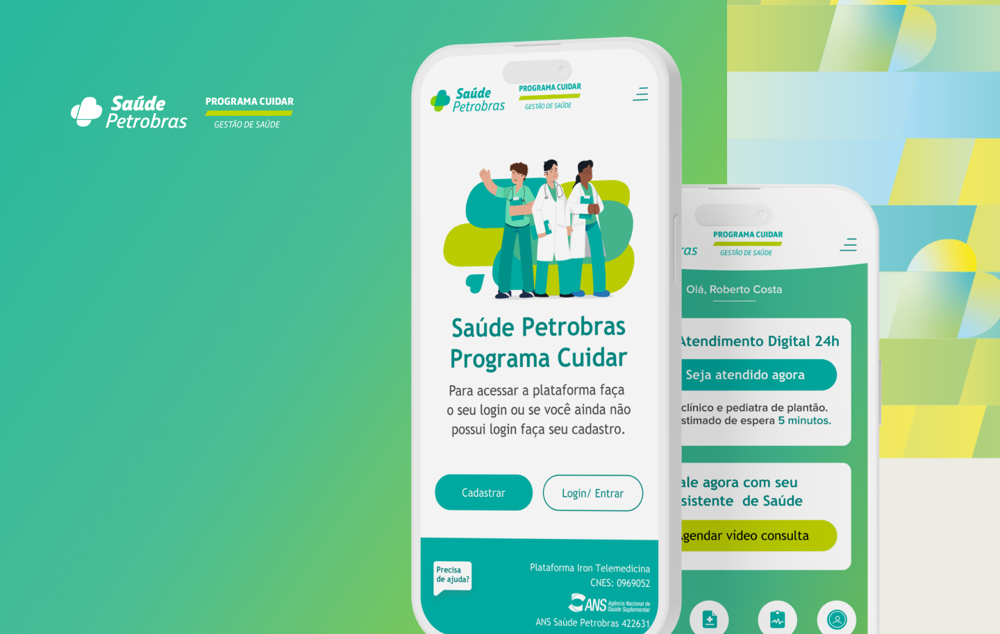

HEALTHCARE · PRODUCT DESIGN
Petrobras employees needed medical guidance during COVID without visiting a clinic. I designed a triage-first telehealth platform for a workforce under stress.
Clinics closed; 50K+ employees needed guidance from home, but the corporate portal felt fragmented to first-time telehealth users.
Triage-first telehealth: one calm path, one decision at a time. Describe → triage → consult → guidance
Shipped at COVID peak. Remote access eased clinic load; usability testing highlighted ease of navigation.

50K+ employees and families needed symptom evaluation and doctor access without clinic visits, but the corporate portal was fragmented. Crisis telehealth: anxious, often first-time users, needing direction fast.
Petrobras Saúde serves one of Brazil's largest corporate health plans. During COVID, the workforce could not wait for in-person care, yet the digital entry point scattered symptom evaluation, scheduling, and medical guidance across disconnected screens.
Employee interviews, flow mapping, and prototype testing before full build. Research surfaced one need: plain language, quick access, clear next steps.
Modular step-by-step screens: one decision at a time, especially during moments of health concern. Scope covered triage workflows, interface design, and Petrobras-aligned visual system.
Four components, one crisis-ready path. First-time users could complete a flow without training.


We tested information-heavy screens early. Users skipped them. Progressive disclosure and everyday language replaced jargon-heavy dashboards.
A home screen with multiple health services looked complete in stakeholder reviews but failed in usability. We led with symptom evaluation. That was the entry point employees actually needed.
Petrobras brand alignment without bureaucratic coldness. Calm visuals, confirmation states, and secure-session cues at every handoff.
Shipped at COVID peak for 50K+ beneficiaries across Petrobras's corporate health plan. Employees reached medical support without clinic visits during critical pandemic periods, easing load on in-person services when capacity mattered most.
Usability testing highlighted ease of navigation for first-time telehealth users. Digital triage routed non-critical cases away from in-person services, and plain-language flows kept anxious users moving through one decision at a time.
Crisis UX demands simplicity. Every extra decision point increases abandonment, especially when health anxiety is already high.
Next: Integrate preventative care at the telemedicine entry point; personalized health tracking from prior consultations.